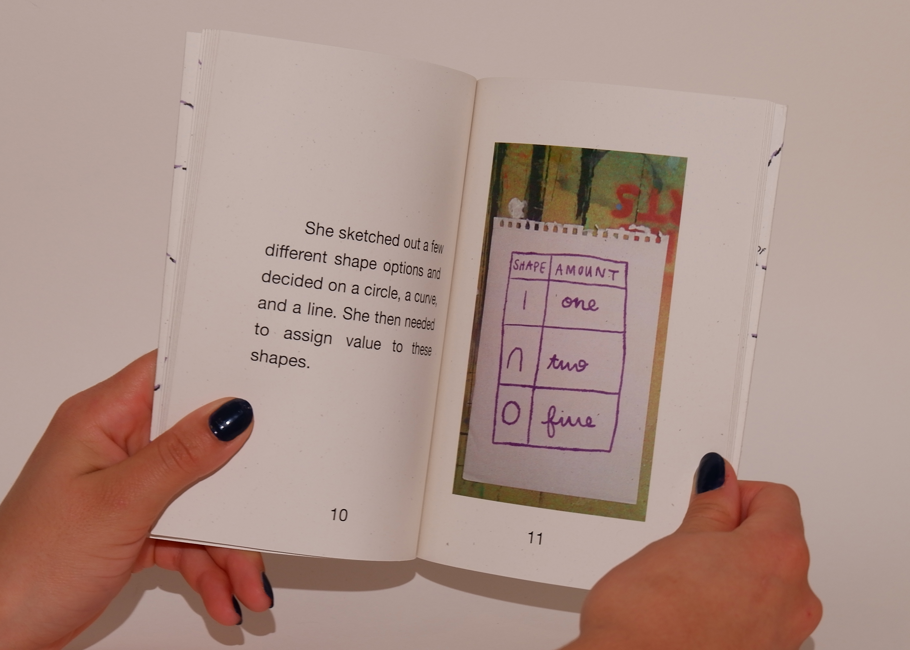
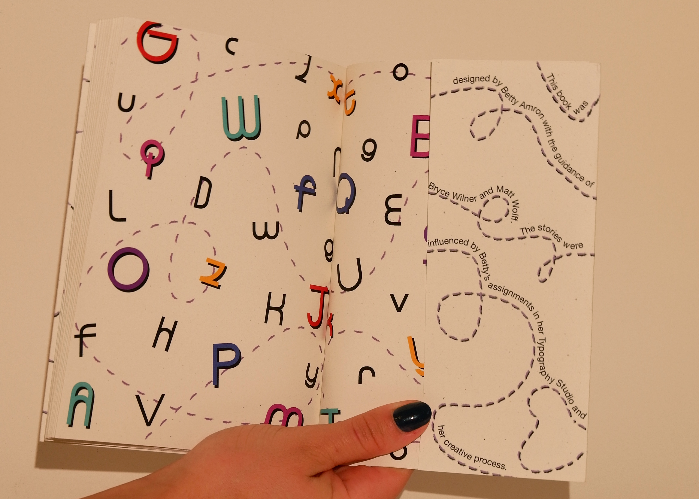

An embossed slipcover encloses a book hand-sewn with a Japanese binding, which
highlights ten Barcelona-based designers and features three original interviews. A secondary grid of
Barcelona neighborhoods overlayed on transparent paper shows where each designer is based.
Coalesce
Fall 2025
This project emphasized the bringing together of disparate elements into a
unified whole where a tight grid system organizes the content and a hand-sewn binding and cover emphasize the
chosen artists'
craftsmanship.
Hands & Shoes
Fall 2025
Inspired by the idea of first impressions being formed through details like a
person's hands and shoes, this postcard set draws a parallel to how postcards reveal their story only when
turned over. A slipcover encloses pairs of original film photographs collected from strangers, presenting each
person's hands and shoes before the written information on the reverse side is revealed.


Betty's Adventures
Fall 2024
Using children's book box sets as inspiration, this project documents the four
projects completed throughout Typography II as a cohesive collection. The packaging and printed materials
feature a
typeface developed in class, tying the work together through a shared visual language.
Personifying the Mundane
Spring 2026
This book explores the personification of mundane parts of everyday life, giving
character to overlooked moments, like the hair found stuck to the shower wall. It was created alongside twelve
bathroom models that embody the personalities found inside the hair shapes. The hand-bound hardcover and
transition
pages within the book feature a pattern of all the illustrated
faces.